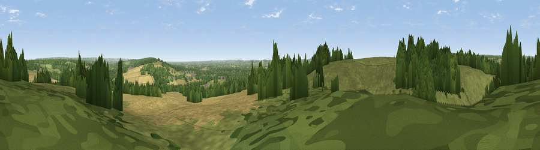

Viewpoint near Nettlestead
#29796 in England · top 18% of its area beats it · near Nettlestead · access?Where it is
The exact computed spot (TQ 67375 52175). Click the marker for map links.
Public access: no public right of way or access land is recorded at this exact spot — it may be on private land. Computed from Natural England's CRoW access layer and OpenStreetMap rights of way — not the legal definitive map. Always verify locally.
The view, rendered

A 360° render of this exact spot computed from the terrain model, tree cover and land cover — summer colours, afternoon light, calibrated against photographs of famous viewpoints. Real trees, hedges and buildings will differ in detail.
The panorama
Grey silhouette: terrain skyline in each direction (720 bearings, Earth curvature and refraction included). Dashed green: skyline with trees (+15 m) and buildings (+8 m) as obstacles. Blue strip: how far the ground is visible on each bearing.
Where the view opens
Wedge length = distance to the farthest visible ground on that bearing (vegetation-aware). Rings at 10, 25 and 50 km.
What fills the view
38% grassland · 32% woodland · 28% cropland · 2% built-up
Angular shares of the visible panorama (visual magnitude), not map area. Landscape diversity 0.51 (0–1 Shannon).
Key numbers
More beautiful places nearby
The staircase of upgrades: each row has a higher view potential than everything closer. Driving times are estimates from straight-line distance, calibrated against real road routing — check an actual route before setting out.
| Place | Direction | Drive | Score |
|---|---|---|---|
| Birchetts Hill | WSW · 0 km | ~2 min | 42.0 |
| Viewpoint near West Peckham | WNW · 3 km | ~8 min | 43.6 |
| Viewpoint near Offham | NNW · 4 km | ~10 min | 44.7 |
| Viewpoint near Plaxtol | WNW · 9 km | ~19 min | 58.0 |
| Viewpoint near Trottiscliffe | NNW · 10 km | ~19 min | 60.3 |
| Viewpoint near Vigo Village | NNW · 10 km | ~19 min | 60.7 |
| Viewpoint near Birling | N · 10 km | ~20 min | 65.1 |
| Viewpoint near Shipbourne | W · 10 km | ~20 min | 66.2 |
51.24420, 0.39660 · source: screening · position refined by local search. Computed location — check access rights before visiting.